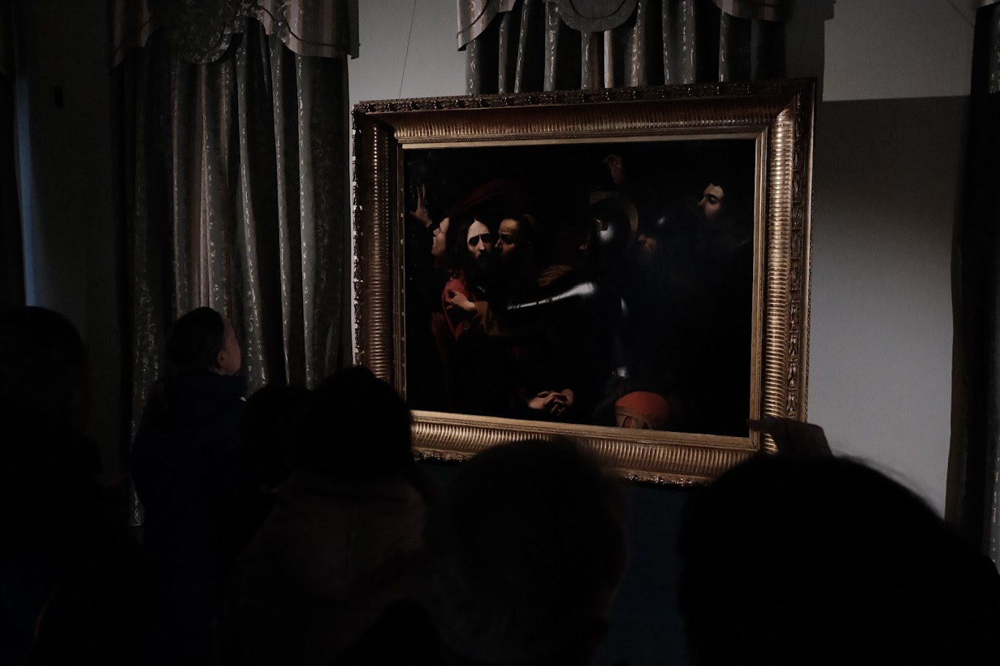

The Stolen Caravaggio and Art Restoration: Resistance against Time and Its Plagues
19.04.26
At St. Sophia Cathedral Сomplex in Kyiv, in the House of the Metropolitan, “The Taking of Christ” or “Judasє Kiss”, a painting by Caravaggio, is exhibited until 12th of April. The painting in a gilded frame shows off exquisite half-tones and the play of light, but it was in a completely different condition not so long ago. In 2008, it was stolen from the Odesa Museum of Western and Eastern Art: the canvas was cut out directly from the subframe on the wall. In 2010, the canvas was found in Berlin (with losses of 10% of the image, cracks, creases, and signs of wear). The painting was returned to Ukraine, but it was admitted as physical evidence in a court case, so the restoration could begin only eight years later. The experts from the National Restoration Center of Ukraine worked on it. We visited the center to find out how its restorers bring paintings back to life.
The Restoration Center was founded in 1938, and it has been busy ever since. Works of art suffer continuously, both from time itself and from its plagues: wars, natural disasters, vandalism, etc.

When restorers have a piece of visual art on their hands, they need the complete information about it. The Scientific Department of Physical and Chemical Analysis gathers a case history of sorts; it works not only with canvas paintings but also with applied art (ceramics, glass, stone, fabric, metal, wood, etc.) and with paper exponents. “Restorers want to know the composition of materials the painting is made of: what is the base, the ingredients of the ground, the layer of paint, whether there is any varnishing,” Vira Rasponina, the head of the department, says.

Grounds for paintings can be based on glue, oils, or emulsions; they can be single- or multi-layered. For instance, glue grounds deteriorate when exposed to water, and oil ones do not. Accordingly, different approaches to reinforce the ground are applied depending on its composition.
For the paint layer, it’s important to identify its binder — the substance that holds the pigment particles together. These may be plant oils, eggs, acacia sap, or synthetic polymers.

“Experienced restorers can identify the painting technique without testing, but we need our own laboratory tests to confirm their hypotheses,” Vira says.

Frequently, an author's artwork is retouched with later additions (“overpaintings”), or sometimes it becomes clear that the piece was completely repainted. It often happens to icons (for instance, this was the case with the 12th-century icon of the Mother of God of Chelm). Then, the experts have to do radiography of the artwork, and the painting's stratigraphy (all its layers) is studied from small samples.

Vira shows us some samples that are currently in the works. They are the size of a poppy seed, but they can tell restorers a lot about the painting using special equipment and methods.

The restorers in the Department of Physical and Chemical Analysis can also identify the age of the piece: “There are pigments that have an upper time limit, that is, they stopped to be used after a certain period, and from the 18th century, synthetic pigments appear, and we have a precise date when they started to be produced,” Vira adds. Both grounds and pigments have such characteristics. By combining data from all of them, one can determine when the painting was created and, for Western European paintings, differentiate between the southern (Italy) and northern (the Netherlands, Germany) schools.

In this context, I have asked about the authenticity of the “Judas’ Kiss” painting, which is considered authentic by some and a copy by others. This canvas was also analyzed by Vira’s department.
“We can state that the composition of the ground and pigments of the paint layer corresponds to paintings of the 17th century. As for the question ‘Who is the author?’, art historians who are studying Caravaggio’s oeuvre should answer it,” Vira replies.

After a thorough analysis, the department prepares detailed documentation on the piece and hands it to the restorers.
Paintings and icons are restored in two departments: the Department of Oil Painting and the Department of Tempera Painting that work closely together. Volodymyr Papushenko, the Head of the former, has been working in restoration since 2002. Hundreds of restored paintings are in his oeuvre, and he worked on restoring the “Judas’ Kiss” painting. The task wasn’t easy, he says: “It had rather unusual damage. If the cuts are in the middle of the canvas, it’s easier than when they are at the very margin of the subframe. When the canvas is stretched on a subframe, these areas experience the biggest load.”

“Judas’ Kiss” was duplicated; another canvas layer was glued at the back to reinforce the base in 1975. It also made restoration more difficult. Volodymyr says he had to put together the original canvas first, then the duplicate, and, using a special adhesive, attach additional canvas stripes to the cuts to ensure mechanical firmness during stretching the painting on the subframe. Toning was also a challenge: “Old paintings are complex because they are both tonally vibrant and translucent. It’s hard to achieve this depth without varnish.”

Volodymyr spent around three years working on “Judas’ Kiss”. But restorers usually work on a couple of paintings simultaneously because some technical processes take a long time (treatment with different substances, drying of glue or paint, etc.). So while one painting is drying, the restorer works on another and studies others at the same time — recording their state of preservation, developing the restoration program, etc.

In the Science and Research Department of Tempera Painting Restoration, there’s a banner on the wall with pests that love art in their own way: woodborer beetles, moths, silverfish, etc. Tempera paintings are usually based on wooden panels, and various pests destroy them. They are pretty difficult to exterminate. Currently, the restorers are testing the nitriding method, in which a painting is sealed in a nitrogen-filled bag for a couple of weeks.

“Beetles can utterly destroy an artwork; sometimes there are complete ruins, but sometimes the damages are small. The main task is to stabilize the piece, strengthen the paint layer, remove the contamination, tone over the losses, and cover it with varnish, while not overdoing anything, not overtoning, not overpainting, as it’s unacceptable for a museum restoration,” Mykhailo Biloshytskii, the Head of the department, tells us.

Icons are often covered with soot from censers and candles, and often they have overpainted areas, especially if they are old. The fate of the overpaints is decided for each artwork individually. “There are times when the overpaint is masterfully made; in this case, we may leave it because it also has artistic or historical value,” says Mykhailo.

The department's employees are currently working on an icon in which a wooden panel with one image was covered with a canvas with another image. In this case, the restorers decided to separate the canvas and turn one icon into two.

The restorers work not only in their own workplaces, but also at various museums. This kind of work became especially frequent after the full-scale invasion. In 2022 alone, the Restoration Center's employees visited 250 museums. For example, the Hryhorii Galagan Regional Art Museum in Chernihiv was damaged by artillery. Mortar shrapnel flew through the canvases that were kept in the museum’s vault. These were large paintings, so the restorers worked on them on the spot: they stabilized their condition, repaired damage, and reinforced weak spots to prevent further deterioration.

“We went there four times and stayed for a week each time,” Volodymyr recalls. “Usually, we were patching the tears so that the canvas wouldn’t bulge. Besides that, we were moving around almost the whole deoccupied territory. We conserved artworks in some places, helped with evacuation in others, monitored the condition of artworks, evaluated the need for restoration, and gave practical assistance with preservation of museum exhibits made of various materials.”

Volodymyr thinks that Ukraine needs more restorers, and that the state doesn’t care enough about the field: “It was probably in Soviet times that we lost understanding that these artworks are ours, and not nobody’s, and it’s us, and not someone else, who have to preserve them. Currently, some communities are trying to spread this idea, make it more popular.”
For example, the restorer told us about activists from Lokhvytsia who found icons in a church after it was transferred from the Ukrainian Orthodox Church of the Moscow Patriarchate to the independent Orthodox Church of Ukraine, and who engaged local entrepreneurs and farmers in rescuing and preserving these artworks. If this kind of attitude becomes popular in our times, we will be able to preserve many artworks, woodborer beetles, and aggressive neighbors notwithstanding.
The reportage is published with the support of the Alfred P. Sloan Foundation.